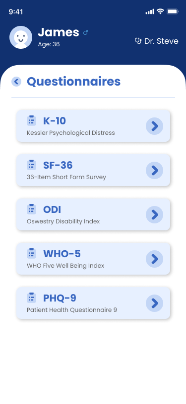
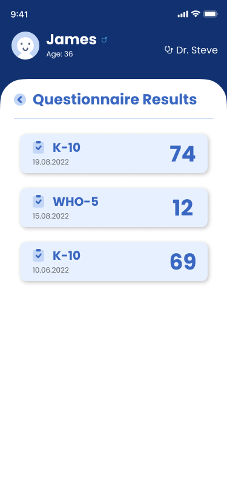
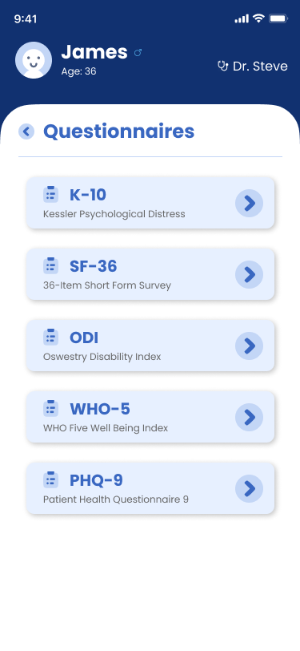
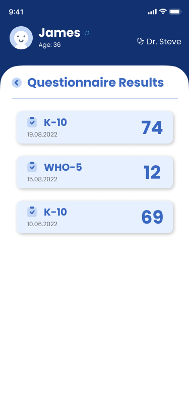

SmartQ
SmartQ is a online digital questionnaire system designed for clinicians and medical students according to Australian healthcare system. By presenting PROMs questionnaires to users, SmartQ provides patient-centered healthcare services, and continuous evaluation and treatment, thus to supersede traditional paper questionnaires and improve efficiency of practitioners. Currently, it also provides an practical opportunity for UQ medical students to learn about the medical system in Australia.
In SmartQ, patient can complete questionnaires either by themselves or with the assistance of practitioners, after which they can get detailed feedback and explanations. Practitioners have access to previous questionnaires and results that specific patient has done in the past in order to evaluate patients' health status. Besides, SmartQ utilizes FHIR 4.0 standard which adapting to mainstream healthcare systems in Australia.
Practitioner Patient & Practitioner
Team leader Researcher Designer Developer
- Task allocation & coordination.
- Communicating with stakeholders.
- Leading funtionality & UI design.
- Determining technical framework & leading implementation.
Background
In traditional healthcare systems, questionnaires are usually printed on paper and handed to patients to complete. This process have lots of issues such as low efficiency and difficult to preserve and retrieve. As the development of technology, healthcare systems in Australia has also benefit from it and have great improvement, the emerge and widely use of FHIR standard is the strongest evidence. However, research indicated that there are still quite a few medical institutions that have not fully digitalized, or not connected to FHIR standard, some even still using traditional paper questionnaires. Consequensly, a unified questionnaire system will help to improve medical staffs' efficiency and achieve interoperability of different healthcare systems.
Research
According to the basic demand and relative literature review, we found a CSIRO officer and several UQ medical students as participants of our user research and made interviews with them about Australia healthcare systems and questionnaire process. As the potential users and future practitioners, our questions for medical students emphasized on Australia medical system, consultation process, and current situation of medical questionnaires. While CSIRO is an Australia research institution, they are more familiar with the FHIR standard and technical issues, so in addition to the healthcare system and how FHIR embedded into it, we focused more on the implementation of questionnaire under FHIR standard and how to integrate with actual consultation process.
According to the interview, we figured out that the questionnaire process is either done by patients themselves or patients with the assistance of the practitioner, and this happens before the consultation part. As some clinics have digital questionnaire systems, but they are not integrated into FHIR standarded system and hard to organize and retrieve, thereby reducing their efficiency.
Define
According to the research outcomes, we have concluded the requirement of the questionnaire system and targeted existing issues. which is an mobile digital questionnaire application designed for healthcare systems that allows patients to complete PROM questionnaires and check results, while provides clinicians with patient questionnaire results and analysis. The biggest painpoint is the efficiency of practitioners, so the system should be simplified to the maximum extent possible both for patients and practitioners. With all the works have been done so far, we named our system SmartQ
Besides, we also learned that our SmartQ system might need SSO to login because it could be easier for practitioners that using different medical systems, and it could also allows UQ medical students to login with UQ Portal and get familiar with the process. Also, some participants wish to have a simplified login method such as using QR Code.
Ideate & Prototype
With the summarized requirements and funtions, we organized and determined the system process. The most critical things is that the end user is uncertained, as it could be patients themselves, patients with practitioners to complete the questionnaire, or practitioners to check the results. This could lead to 2 issues, which is the data permission and terminology. According to further investigation, practitioners will be the main user that operate the SmartQ, and the questionnaire could be completed by either oral communication with patients or directly hand over the mobile device to patients. With this consideration, presented contents in SmartQ are limited to information that is useful for both patients and practitioners. In this case, patients will not be confused when completing questionnaires, while practitioners have other means to access other uncommonly used data as SmartQ is connected to local FHIR server. As for the terminology, the main part of the questionnaire will be more descriptive and easy to understand, thus make it easier for patients to answer. While questionnaire names and explanations will be presented in both layman's terms and specialist terms as far as possible, so that they can be quickly understood by both patients and practitioners.
Low fidelity prototype was designed according to functions and process flow. There are 2 main modules in SmartQ: do a questionnaire and view questionnaire results. In the questionnaire part, we decidced to used the simple way to present questions and choices on the same page, this would provide an experience that similar to paper questionnaire, and for users they can also easily look back to check previously answered questions and make adjustment. For questionnaire results, there will be a total score for each questionnaire according to their scoring rules, and detailed explanation will also be provided. In SmartQ, there will be a list to present a specific user's result in a reverse chronological order, and total scores will also appear on the list so that practitioners can make a visual comparision across the time. And in the detailed result page, there will be total score, explanation of the score, and other detailed information of the whole result. In order to allow patients to have more idea about the meaning of the score, an interactable question mark icon was placed on the top of the score, and a popup layer will be triggered to present different scoring ranges and its corresponding meanings. The "My Answers" popup can reappear patient's choices to help practitioners making diagnosis. As SmartQ needs to display current patient and practitioner's information, in which only name, age and gender is required, and that is not sufficient to constitude a seperate user information page. So simplified information of current patient and practitioner was designed in a section on the top of every page, just like a navigation bar.
As green and blue are the most commonly used color for the domain of health and medical, we tried both two colors in the prototype iteration, and the blue color theme was finally adopted because it makes people feels more safer. Also, most Australian medical and healthcare system are using blue color scheme, in consistent with them would be helpful to adapting and connecting to other healthcare systems in the future. For the style, we have used the more lively "Poppins" font and uniformly styled rounded-corner icons. With the simplified layout together, it could present a concise and comfortable using experience for both practitioners and patients, and also patients will not be stressed when doing questionnaires and affect the result.
In high-fidelity prototype, we have improved the "nav bar" part on the top. We swapped the location of page navigation and information section, and utilized rounded-corner and background color to seperate the main part and information section naturally. Now the main part of the page looks more like a card floating above the background. And as the page jumpings will be happened within the card, and will not affect the information section. In this case, the whlole page will looks more reasonable and aesthetic.
Testing
3 rounds of testing session were held during prototype iteration. participants are mainly teaching staffs and students of UQ medical school, and a CSIRO engineer has attended as well. We mainly used think aloud as our testing method, observing while they are using the prototype and talk with them to learn about their thought of our functionality, and following with questions based on their details that we care about. As the CSIRO engineer is professional in the technical part of healthcare system, we invited him to run a co-design activity to help to improve our prototype in a logical aspect.
After 3 rounds of testing, we have improved issues that might affect user experience, such as the specification of terminology, the prioritisation of page elements, and more.
Implementation
With the consideration of development timeline and the specific login requirement as a whole, we decided to implement SmartQ as a webpage system that adapted to mobile devices. In this case, SmartQ can be embedded into existing apps, then adapt and connected to other existing healthcare systems, so different users can login easily. As SmartQ is connected to the FHIR server, it can communicate with the FHIR server directly, access questionnaire resources and save questionnaire results, and don't need a back-end at all. All the data such as questionnares, choices, and results are designed according to the standard of FHIR and save in the form of JSON, all data communication with the FHIR server is based on those JSON files. Currently there are 5 kinds of questionnaires in the system and stored locally in the deployment directory. In the future, a management system can be developed and transfer those data into database if there is a need of questionnaire data maintenance.
For the system framework, we utlized Vue.js to implement SmartQ because it can achieve single-page application, especially for our SmartQ, which needs partially page jumping, this could provide a smooth questionnaire experience. Besides, as a componentised framework, Vue.js can achieve high code reusability and that could simplify development and save time. With third-party libraries such as FHIR Js Client Library, functions could be easily achieved. According to the design, we sorted out the data flow diagram, and implement the system as planned. Finally, the mobile questionnare system SmartQ was completed and deployed in time.